Claude Desktop 对接第三方 Deepseek API Key
一、准备工作
开始前请先准备好以下内容：
- 已安装 Claude Desktop
- 已安装 CC-Switch
- 一个 OpenOX 账号
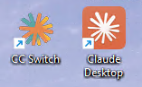
二、在 OpenOX 生成 Deepseek 的 API Key
1进入控制台 点击令牌管理
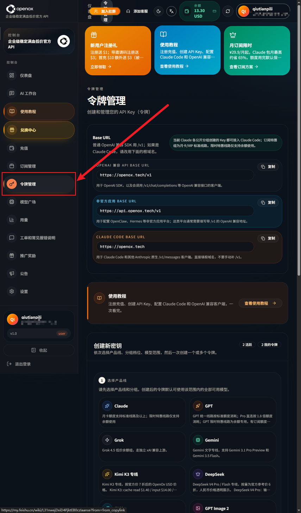
2下滑 选择 Deepseek 创建令牌
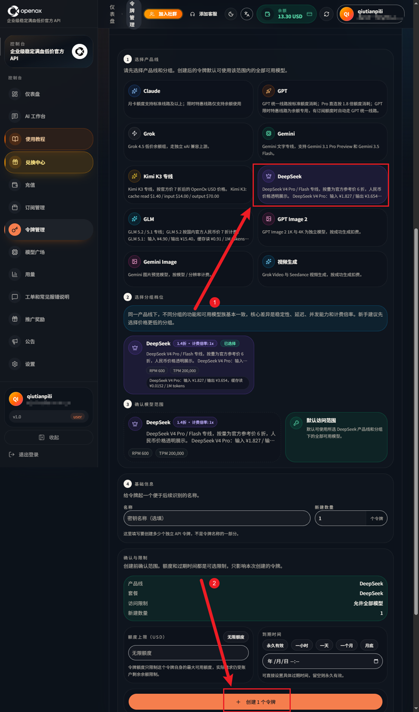
3下滑 复制 API Key
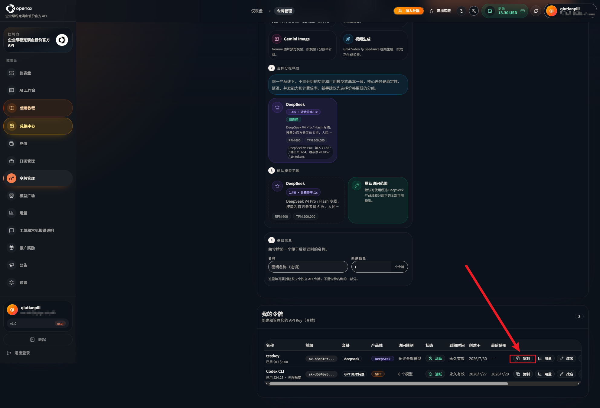
三、配置 CC-Switch
1选择对应平台
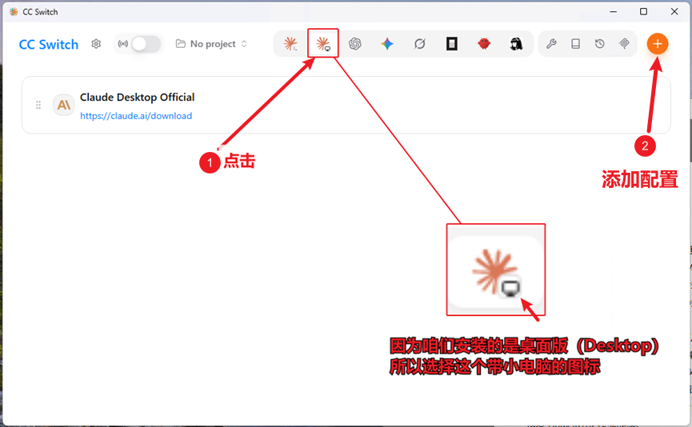
2找到 Deepseek，点击后下拉进行配置
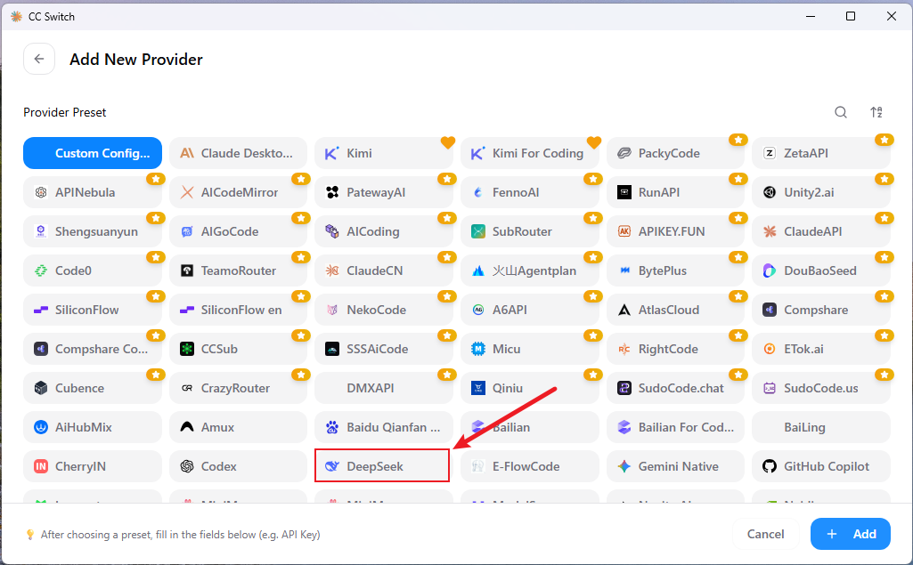
3填写关键信息（注意图中第 ③ 点）
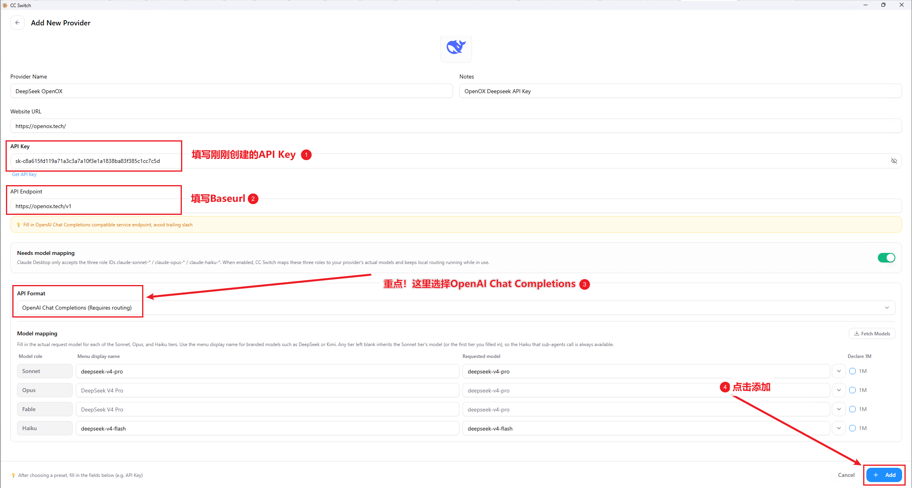
4测试连通性
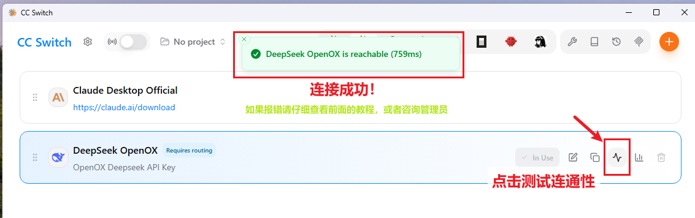
5打开 CC-Switch 本地路由功能
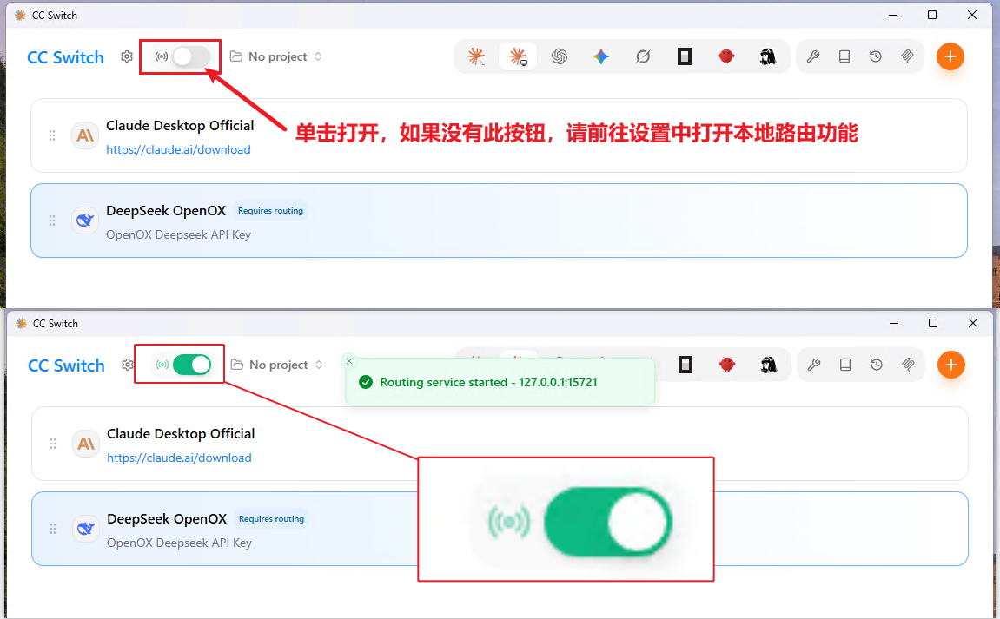
（可选）主页面无路由开关时
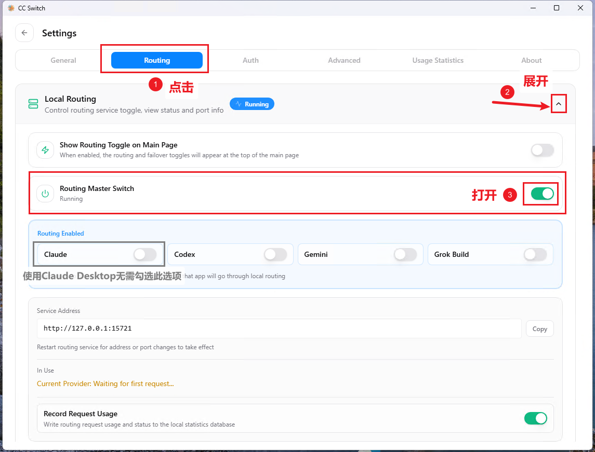
6将刚刚创建的配置启用
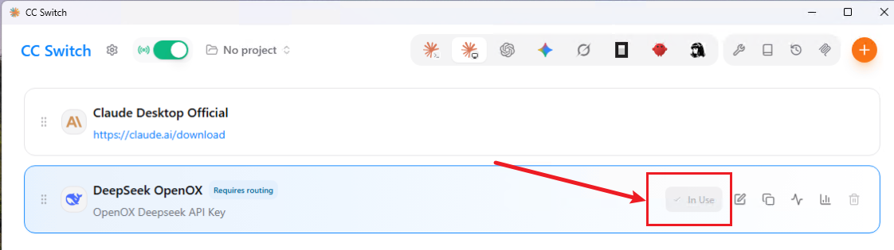
7启动 Claude Desktop app
（如果在配置 CC-Switch 时已经打开，请重启 Claude）
如果提示这个就点击 Open Setup 进行对 Claude 进行配置
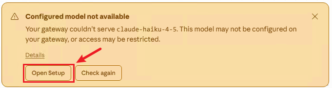
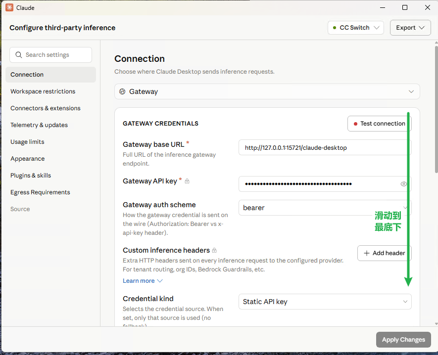
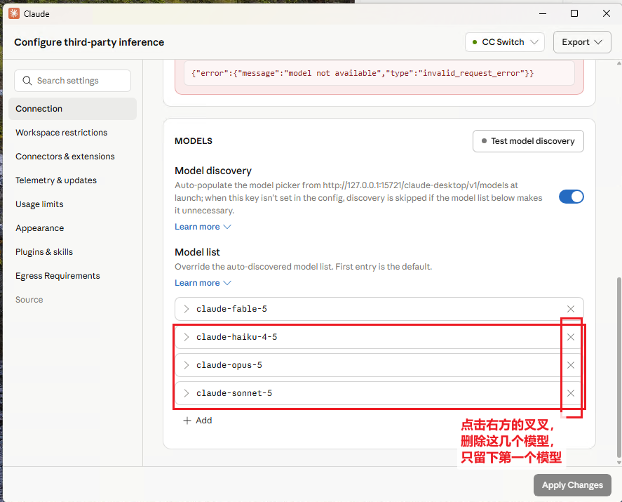
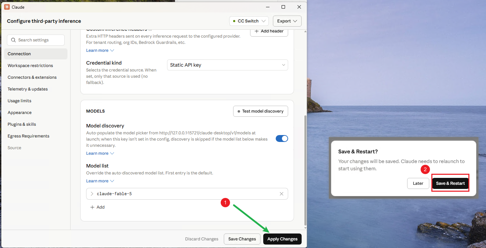
8Claude 配置展示
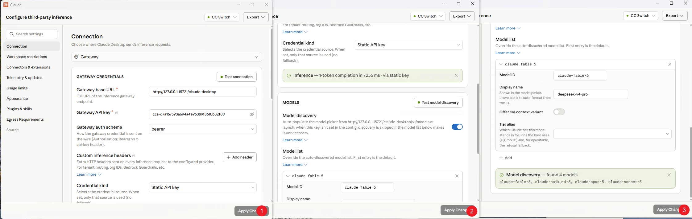
自动重启后，Claude Desktop 对接第三方 Deepseek API Key 成功！
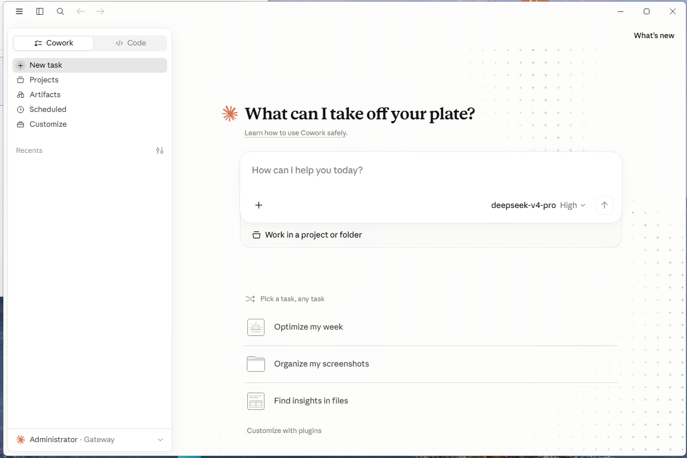
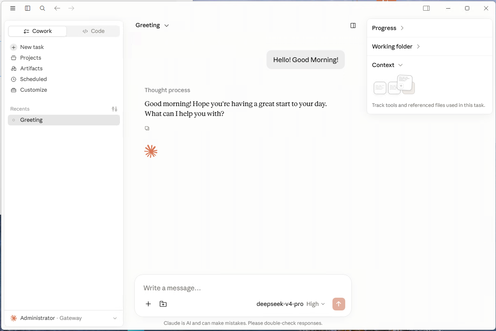
如果仍有其他问题，请联系管理员。